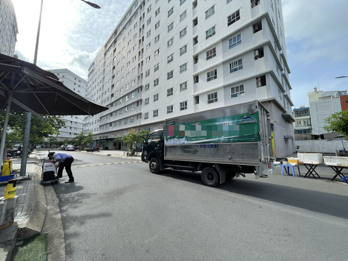

Phó Bí thư Thành uỷ Hà Nội: Ngày 2/9 sắp đến,
nếu không siết chặt giãn
cách, nguy cơ
lây nhiễm dịch bệnh rất lớn
Dù số ca mắc Covid-19 trong cộng đồng có xu hướng giảm, Phó Bí thư Thành ủy Hà Nội nhấn mạnh
người dân không được chủ quan, lơ là. Trong khi đó, lễ Vu Lan và ngày Quốc khánh 2/9 sắp đến,
nếu không siết chặt kỷ luật giãn cách, nguy cơ lây nhiễm dịch bệnh sẽ rất lớn.
- Toàn cảnh Hà Nội sau 25 ngày giãn cách: Có 1.691 ca mắc mới, số ca giảm nhưng "chưa bền vững".
- Chuyên gia: Hà Nội có cần kéo dài thời gian giãn cách không?
- Hà Nội: 13 nhóm người nguy cơ cao cần lấy mẫu xét nghiệm ngay
Trong buổi kiểm tra công tác phòng, chống dịch Covid-19 tại quận Ba Đình sáng 19/8, bà Nguyễn Thị Tuyến, Phó Bí thư Thường trực Thành ủy Hà Nội đánh giá, tình hình dịch bệnh cả nước và TP. Hà Nội đang hết sức phức tạp.
Theo bà Tuyến, những ngày gần đây, số ca nhiễm trong cộng đồng tại Hà Nội có chiều hướng giảm, cho thấy vai trò quan trọng của xét nghiệm sàng lọc diện rộng và thực hiện nghiêm giãn cách toàn xã hội.
"Tuy nhiên, nếu chúng ta chủ quan, dịch bệnh sẽ lây lan rất nhanh và khó kiểm soát. Trong khi đó, lễ Vu Lan và ngày Quốc khánh 2/9 sắp đến, nếu không siết chặt kỷ luật giãn cách, nguy cơ lây nhiễm dịch bệnh sẽ rất lớn", Phó Bí thư Thường trực Thành ủy nhấn mạnh.
Trong kết luận của Thường trực Thành ủy Hà Nội về tiếp tục tăng cường các biện pháp phòng, chống dịch Covid-19 nêu rõ, nguy cơ lây lan dịch bệnh vẫn ở mức cao và khó lường.
Ban Chỉ đạo phòng, chống dịch TP điều phối, phân luồng F0, F1 bảo đảm khoa học, an toàn nhằm nâng cao hiệu quả cách ly và điều trị. Các lực lượng chức năng và đoàn kiểm tra của quận, huyện, thị xã tăng cường kiểm tra, giám sát, tuần tra, nhất là đột xuất, xử lý nghiêm vi phạm.